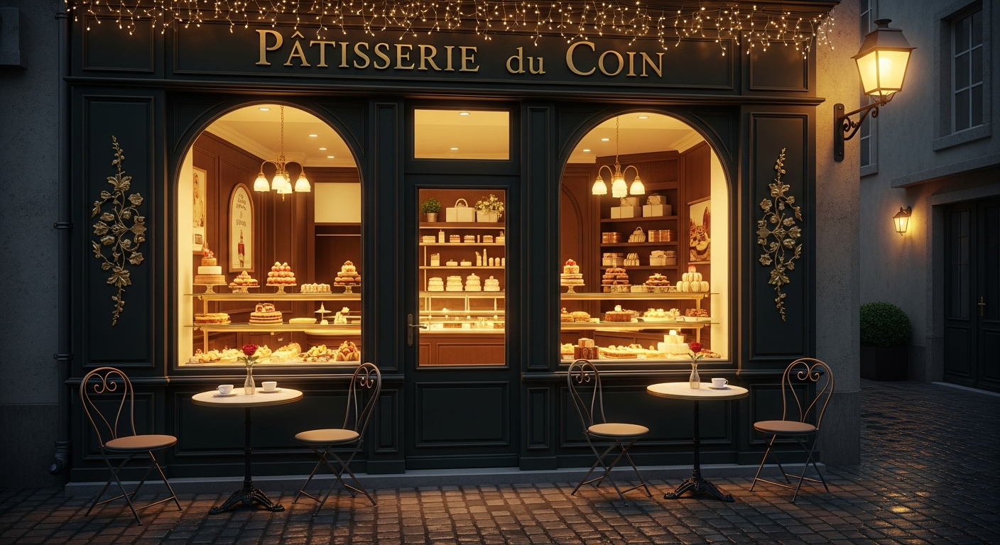
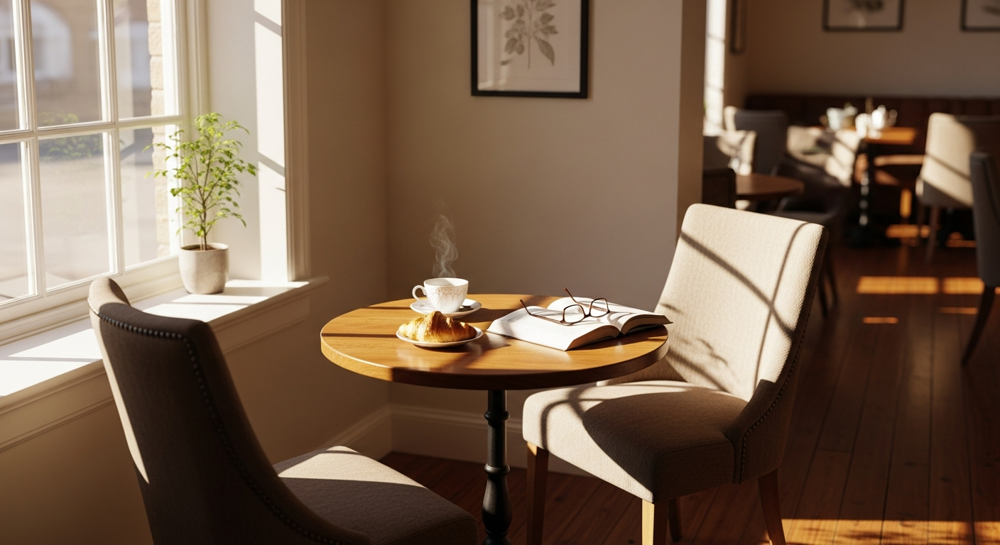
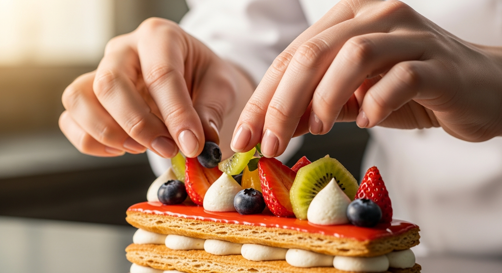

關於我們
| 店名 | 小巷蛋糕舖 Alley Cake Shop |
|---|---|
| 電話 | 02-8765-4321 |
| 地址 | 台北市信義區松壽路999巷8號 |
| 營業時間 | 10:00–19:00 |
| 公休日 | 每週二公休 |
| 交通方式 | 捷運市政府站步行約 5 分鐘 |
| 停車資訊 | 附近有付費停車場 |
| 付款方式 | 現金、信用卡、Apple Pay |
關於我們

小巷蛋糕舖 Alley Cake Shop 提供每日現做法式甜點、生日蛋糕與下午茶。嚴選頂級食材，給您最純粹的甜蜜滋味。
品牌故事

小巷蛋糕舖誕生於一個熱愛烘焙的午後。我們相信，甜點不僅僅是味覺的享受，更是療癒心靈的魔法。隱身在繁忙城市的巷弄中，我們打造了一個溫馨的空間，讓每一位踏入店裡的客人都能暫時放下煩憂，品嚐手作的溫度。
主廚的話

「做自己喜歡吃、也敢給家人吃的甜點。」這是我創立小巷蛋糕舖的初衷。我們堅持使用最優質的天然食材，將法式甜點的細緻工藝結合在地風味，用心製作每一款蛋糕。希望我們的甜點能為您的日常生活增添一抹甜蜜的微笑。